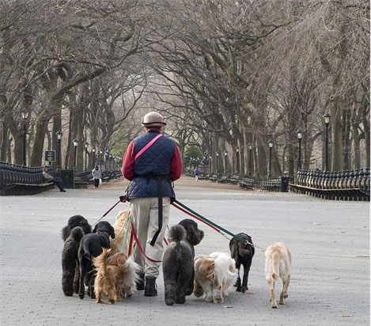

Engelsk B
kl. 09.00-14.00
Vejledning til opgavesættet
| Du skal besvare følgende opgaver: | |
|
|
| Tekster til assignment 5: | |
| 5A – Fiction: | “Green Velvet”, a short story by Krzysztof Pelc, 2019. |
| 5B – Non-fiction: | “How video game skills can get you ahead in life”, a TED talk by William Collis, 2020. |
Vejledning og skabelon til at løse opgaven
Den samlede eksaminationstid for Assignment 1-5 er 5 timer. Besvarelsen bedømmes som en helhed ud fra de faglige mål for niveauet. Der lægges vægt på beherskelsen af det engelske sprog, forståelse af forlægget og færdighed i skriftlig fremstilling på engelsk.
Det anbefales, at du skriver din besvarelse i skabelonen, som ligger under Template i menuen til venstre. Besvarelsen afleveres i ét dokument med opgaverne i rækkefølgen 1-5.
Henvisninger til tekst, video- og lydklip
Hvis du citerer, skal du angive kilde.
Alt anvendt materiale skal være engelsksproget og angives med kildehenvisninger. Til forklaring af grammatiske opgaver kan materialerne være på dansk.
Du kan henvise til dele af video- og lydklip, f.eks. ved at angive afspillerens minut- og sekundtal for henholdsvis starten og slutningen af klippet.
Alt anvendt materiale skal være engelsksproget og angives med kildehenvisninger. Til forklaring af grammatiske opgaver kan materialerne være på dansk.
Du kan henvise til dele af video- og lydklip, f.eks. ved at angive afspillerens minut- og sekundtal for henholdsvis starten og slutningen af klippet.
|
Tekster i opgavesættet
Teksternes ortografi og tegnsætning følger forlæggene. Trykfejl er dog rettet.
Opsætningen følger ikke nødvendigvis forlæggene. Dog følges forlægget nøje, hvor opsætningen på den ene eller anden måde indgår i opgaven.
Opsætningen følger ikke nødvendigvis forlæggene. Dog følges forlægget nøje, hvor opsætningen på den ene eller anden måde indgår i opgaven.
Assignment 1
Find alle verberne (udsagnsordene) i præteritum (datid) i nedenstående tekst, og omskriv dem til præsens (nutid). Skriv hele teksten som dit svar, og markér verberne tydeligt som i eksemplet.
| Eksempel: | Pepe flipped the beer mat over… Pepe flips the beer mat over… |
Pepe flipped the beer mat over and back while he waited. He slid it forward with his thumb until it overhung the counter edge and then flicked it up from below with the tops of his fingers so it hopped into the air. He always managed to catch it before it landed.
When his drink came, he laid out the beer mat before pushing the usual handful of dollar bills across the lacquered wood and then sipped his beer in small mouthfuls, watching as the foamy white rings banded the inside of the glass like a coati’s tail. The barman knew to keep serving until the money was up.
The other miners heckled Pepe now. A scab, they called him, a Judas and a turncoat. […] The taverna1 where the other miners still drank was raucous and the barman there served quickly, tossed shakers over his shoulder and opened bottles behind his back. This barman was different; he was awkward and slow and his rusty movements seemed to drag out the evenings interminably and Pepe liked that just fine.
Pepe drank in silence as the frothy head of his beer dissipated, arranging itself into shapes which floated on the yellow body below: a map of Bolivia, a sleeping fruit bat, a toy car.
When his drink came, he laid out the beer mat before pushing the usual handful of dollar bills across the lacquered wood and then sipped his beer in small mouthfuls, watching as the foamy white rings banded the inside of the glass like a coati’s tail. The barman knew to keep serving until the money was up.
The other miners heckled Pepe now. A scab, they called him, a Judas and a turncoat. […] The taverna1 where the other miners still drank was raucous and the barman there served quickly, tossed shakers over his shoulder and opened bottles behind his back. This barman was different; he was awkward and slow and his rusty movements seemed to drag out the evenings interminably and Pepe liked that just fine.
Pepe drank in silence as the frothy head of his beer dissipated, arranging itself into shapes which floated on the yellow body below: a map of Bolivia, a sleeping fruit bat, a toy car.
Niall Bourke, “The Hands of the Andes”, 2019
1 bar
Assignment 2
Se videoklippet, og besvar opgave a., b. og c. Brug relevant grammatisk terminologi. Husk kildehenvisning, hvis du citerer fra en grammatikbog. Skriv dit svar på dansk.
| a. | Find og skriv tre verballed (udsagnsled) i tre forskellige grammatiske tider i videoen. Skriv, hvilke grammatiske tider de tre verballed står i. | |
| b. | Find og skriv fem forskellige adjektiver (tillægsord). Gradbøj adjektiverne i 1., 2. og 3. grad. Forklar reglerne for gradbøjning af adjektiver ud fra dine eksempler. | |
| c. | Find og skriv to eksempler på forskellige typer af spørgende sætninger i videoen. Forklar kort, hvordan man danner spørgende sætninger på engelsk med udgangspunkt i dine eksempler. |
Mary Berry's Simple Comforts - Yorkshire Coast
Assignment 3
The sentences below, which are from two different texts, have been jumbled.
Connect the sentences so that they form two coherent texts.
|
Assignment 4
Write a text (50-75 words) to match the photo.
In your text you must use the present tense (nutid), and you must include four different adverbs (biord). Underline the adverbs in your text.

Assignment 5
- Answer 5A or 5B.
Assignment 5A - Fiction
- Write a short summary of Krzysztof Pelc’s short story “Green Velvet” in about 125 words.
- Write an analytical essay (600-900 words) in which you analyse and interpret the short story. Your essay must focus on the relationships between the generations.
Include the following analytical terms in your essay:
conflict, main theme, symbols
Your essay must include references to the text.
Material
Krzysztof Pelc, “Green Velvet”, 2019.
Assignment 5B - Non-fiction
- Write a short summary of the TED talk “How video game skills can get you ahead in life” by William Collis in about 125 words.
- Write an analytical essay (600-900 words) about the TED talk. Your essay must focus on how William Collis argues for his views. Discuss briefly the pros and cons of video gaming.
Include the following analytical terms in your essay:
intention, language, receivers
Your essay must include references to the text.
Material
William Collis, “How video game skills can get you ahead in life”, a TED talk from TED website, October 2020.
- TED talk: “How video game skills can get you ahead in life”
- Transcript: “How video game skills can get you ahead in life”
Sources
Anvendt materiale (til brug for Copydan):
Niall Bourke. “The Hands of the Andes”, from the anthology Still Worlds Turning, ed. by Emma Warnock. Belfast: No Alibis Press, 2019.
Video. “Mary Berry’s Simple Comforts – Yorkshire Coast”. Daily Motion website, October 7, 2020, viewed September 2021. (www.dailymotion.com)
David Winner. Those Feet. A Sensual History of English Football. London: Bloomsbury, 2005.
Barney Ronay. “Tokyo says goodbye to the Games with grace and sense of relief”. The Guardian website, August 8, 2021, viewed September 2021. (www.theguardian.com)
Image credit: Cornelis Verwaal. “Professional dogwalker on the Mall in Central Park, New York City”. Pinterest website, 2008, viewed September 2021. (www.pinterest.dk)
Krzysztof Pelc. “Green Velvet”. Canadian Broadcasting Corporation website, April 2019, viewed September 2021. (www.cbc.ca)
William Collis. “How video game skills can get you ahead in life”. TED website, October 2020, viewed September 2021. (www.ted.com)